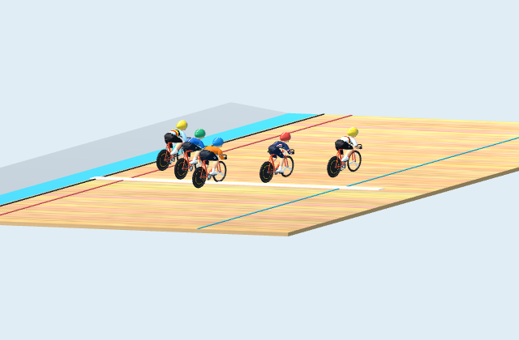
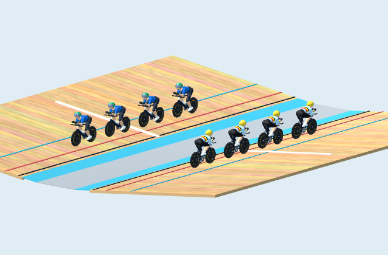
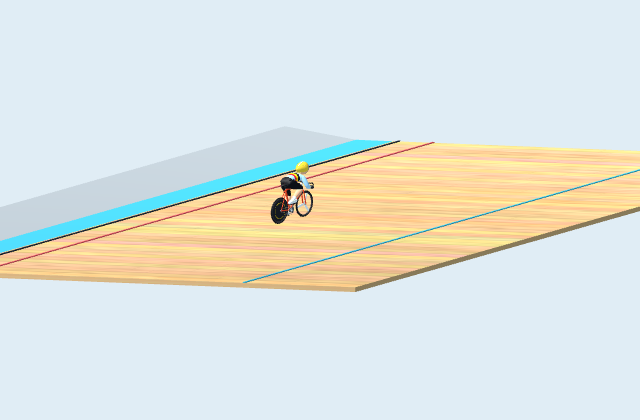
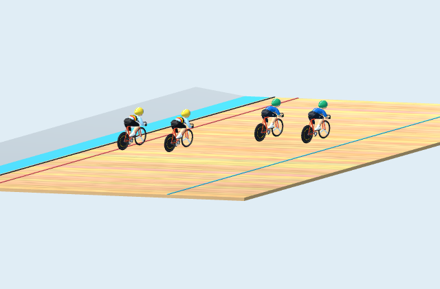
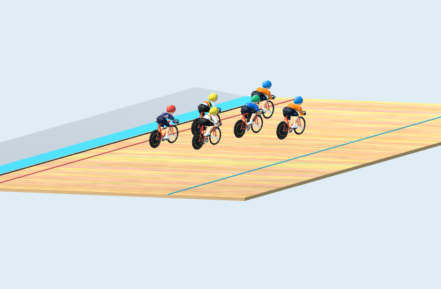
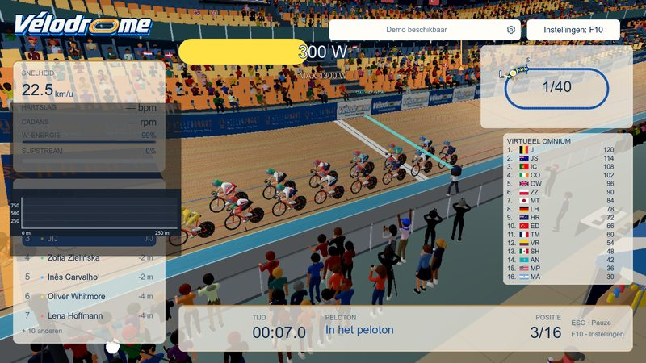

Scratch
ScratchScratch
Eén peloton. Eén finish.
Blijf uit de wind, kies je moment en sprint als eerste over de meet. Wie een ronde wint, staat voor in het klassement.
Je rijdt tegen een virtueel peloton van renners met elk een eigen profiel en wedstrijdgedrag. De temporace en het omnium zijn speelbaar op v0.3.
 Scratch
ScratchEén peloton. Eén finish.
Blijf uit de wind, kies je moment en sprint als eerste over de meet. Wie een ronde wint, staat voor in het klassement.

PuntenkoersElke sprint een nieuwe kans.
Elke 10 ronden een sprint met 5, 3, 2 en 1 punt; aan de finish tellen de punten dubbel. Een ronde winnen geeft +20, een ronde verliezen −20.
 Afvalling
AfvallingElke twee ronden valt de laatste af.
Wie met het achterwiel als laatste over de meet komt, ligt eruit. Blijf uit de gevarenzone zonder te veel wind te pakken.
 Keirin
KeirinVolg het tempo. Ontketen je sprint.
Zes renners met gelote startposities. Drie ronden achter de derny, die geleidelijk versnelt; daarna drie vrije ronden. Blijf in het wiel en kies je sprintmoment.
 Achtervolging
AchtervolgingJij, je tegenstander en de klok.
Twee renners starten aan weerszijden van de piste. Jaag op de beste tijd of haal je tegenstander in. Je rijdt tegen een virtuele tegenstander of tegen een eigen opgeslagen rit. Geen slipstream.

PloegenachtervolgingSamen op jacht naar de snelste tijd.
Rijd met twee of drie virtuele ploegmaats. Stuur op kop naar rechts voor een kopwissel en volg daarna het wattagedoel. Weerstand handmatig of met ERG.

TijdritJij tegen de klok.
500 m of 1 km met staande of vliegende start, met een vergelijking om de 125 meter tegen je vorige rit of je persoonlijk record.

PloegkoersBinnenkortWissel af. Blijf in de wedstrijd.
Rijd als duo, los elkaar af en strijd samen om punten en ronden. De handaflossing oefen je nu al in de pistetraining.

Temporacev0.3Houd het tempo hoog.
Vanaf ronde vijf krijgt de eerste renner bij elke doorkomst één punt. Een ronde winnen levert 20 punten op. Een ronde verliezen kost 20 punten.

Omniumv0.3Vier wedstrijden, één klassement.
Rijd achtereenvolgens scratch, temporace, afvalling en puntenkoers. Je resultaten bepalen samen het eindklassement.
ToernooienBinnenkortMeerdere wedstrijden, één klassement.
Rijd een reeks wedstrijden na elkaar en tel je resultaten op.
Vélodrome bewaart je beste tijden lokaal: een top 10 voor achtervolging en ploegenachtervolging, en voor de tijdrit je laatste rit, je recente record en je record aller tijden, apart per afstand en startwijze. Een opgeslagen achtervolgingsrit kun je later opnieuw als tegenstander kiezen.